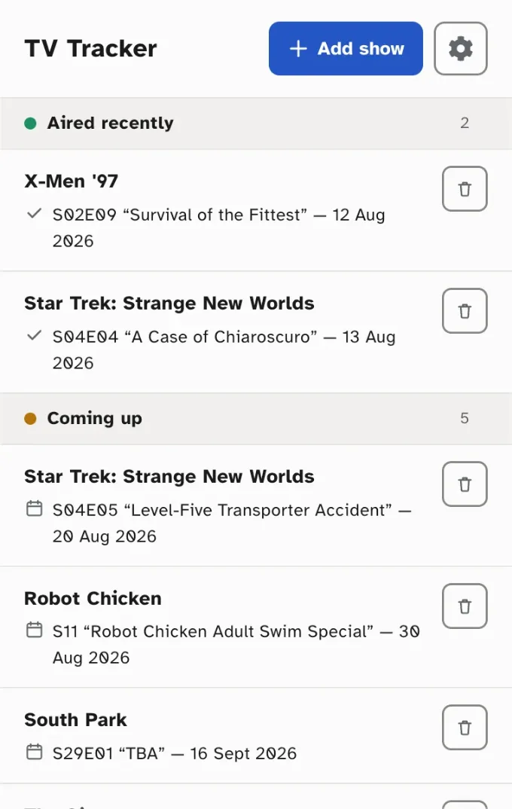

TV Tracker
A browser extension that groups your shows by what's happening right now — aired recently, coming up, on hiatus, or finished. Add a show once and TV Tracker keeps it up to date.

Features
Status Board
Shows are grouped into Aired recently, Coming up, On hiatus, and No upcoming episode.
Search
Search the TVmaze database to add shows by title.
Import and export
Back up your list to a JSON file, or restore it on another browser.
Sort
Order your list by title or air date, ascending or descending.
Background refresh
Show data updates automatically every four hours.
Light and dark mode
Matches your system, or choose one yourself.
Show artwork
Each show displays its TVmaze poster, so it's easy to spot at a glance.
Link to TVmaze
Tap a show's name to open its page on TVmaze for more details.
Toolbar badge
See how many shows aired recently without opening the popup.
FAQ
Why can't I mark shows as watched?
TV Tracker is built as a TV guide, not a watch-tracking checklist — it tells you what aired and what's coming up, not what you've already seen.
Why can't I find a show?
Search results come from TVmaze's database, not a list TV Tracker keeps. TVmaze doesn't have every show — especially very new, regional, or obscure titles — so a missing show usually means TVmaze doesn't have it yet, not that something's broken.
Will my list follow me to another browser or computer?
No — tracked shows are stored locally in your browser, not synced automatically. To move your list, use Export backup and Import from the settings menu.
Is TV Tracker free?
Yes, with no ads, accounts, or paid tiers. If you'd like to support development, there's an optional Ko-fi link — it isn't required to use the extension.
Privacy
No accounts, no tracking. TV Tracker only talks to the TVmaze API to fetch show data — your list stays in your browser.